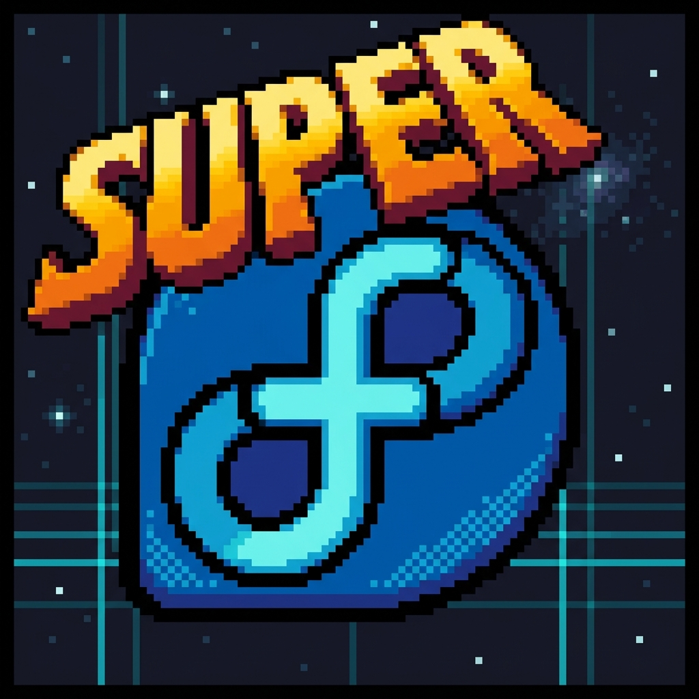
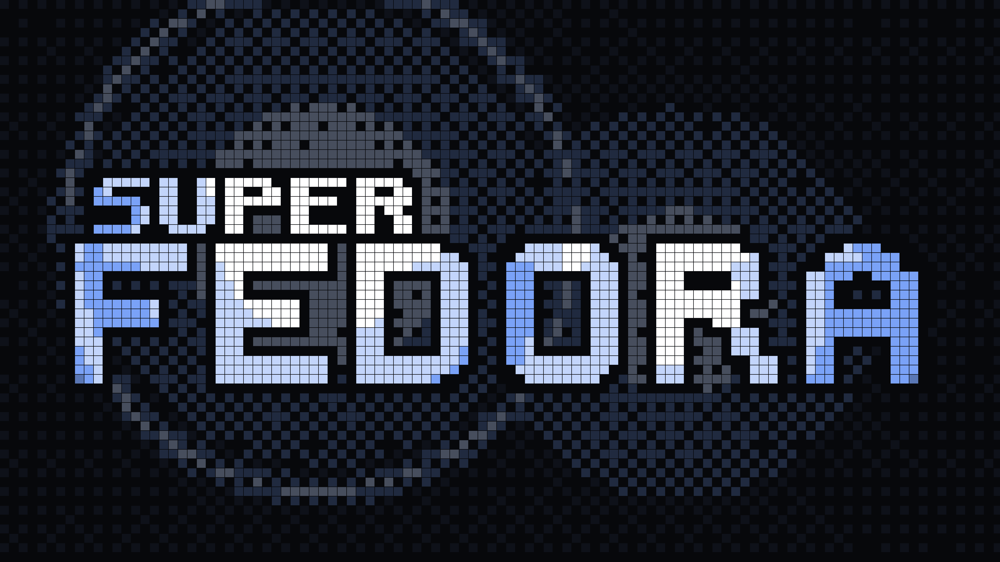
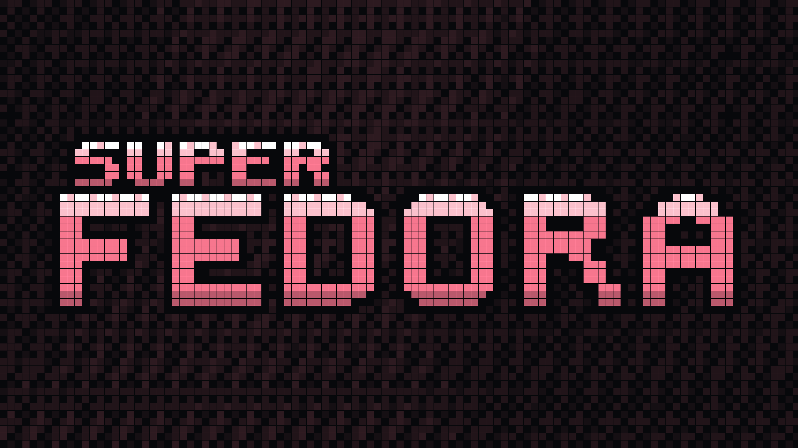
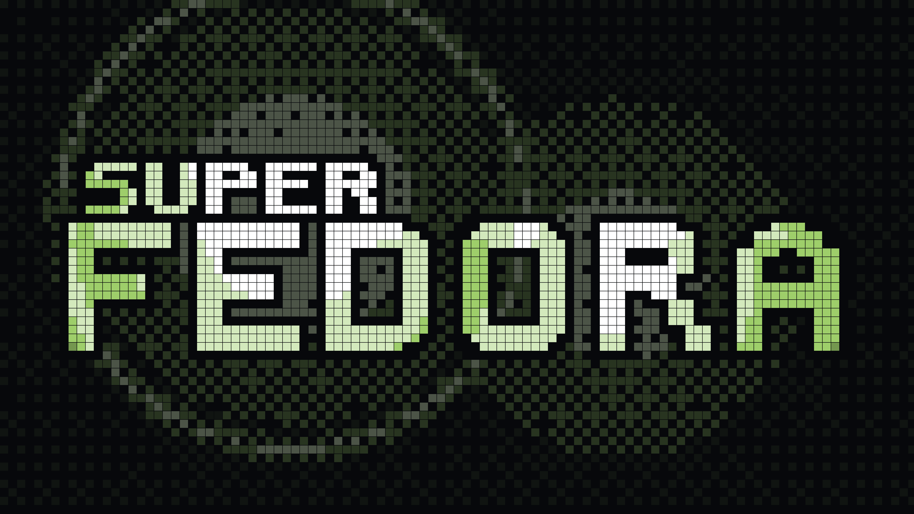
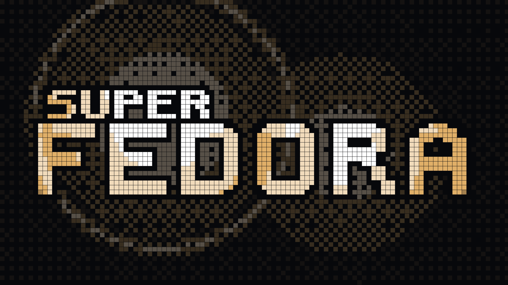
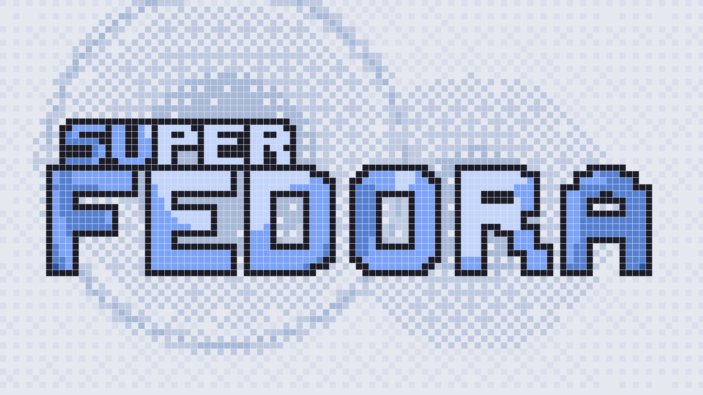
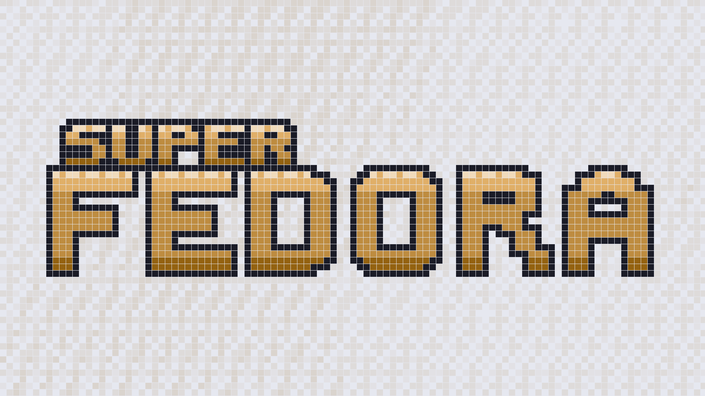

SUPER FEDORA
Curated keyboard-driven workstation on clean Fedora.
The unyielding stability of clean Fedora Minimal netinstall meets the muscle-memory ergonomics of Pop!_OS COSMIC keybindings, the fluid Wayland animations of Hyprland, a reactive Quickshell status bar, the ambient craft of IdleScreen screensavers, and instant Btrfs snapshot rollbacks. Installed via 10 idempotent modules in one single command.
curl -fsSL https://superfedora.github.io/install.sh | bash

Installation & Localhost Hardware Optimization
Install cleanly from a fresh Fedora netinstall, or run it over an existing Fedora Workstation or Server. The interactive installer lets you choose between Quick Install (prebuilt binaries) or Build from Source (compiled specifically for your localhost CPU microarchitecture).
Fedora Minimal Netinstall
Download the official Fedora Everything netinstall ISO. Under Software Selection, choose Minimal Install and create your user account with administrator privileges.
Select Quick or Source Build
Run the interactive bootstrap (prompts for [1] Quick Install or [2] Build from Source), or pass a mode flag directly:
# [1] Quick Install (Prebuilt Binaries)
curl -fsSL https://superfedora.github.io/install.sh | bash -s -- --quick
# [2] Build from Source (Localhost -march=native)
curl -fsSL https://superfedora.github.io/install.sh | bash -s -- --build-from-sourceReboot & Flow
Reboot into the 16-bit tuigreet login prompt. Hyprland starts with Multi-Edge Quickshell docks, 4K 16-bit Hero wallpapers, and the Quake AI Console on Super + `.
Localhost Hardware Source Compilation (-march=native) & Snapper Rollback Guarantee
When --build-from-source (or sf build all) is selected, SuperFedora introspects your exact CPU microarchitecture, thread count, and SIMD extensions (AVX2/AVX-512/BMI2/AES), generating ~/.config/superfedora/hardware-flags.env and compiling workstation tools (wlctl, bluetui, wiremix, tuigreet, fuzzel, btop) with CFLAGS="-O3 -pipe -march=native -mtune=native -flto=auto" and RUSTFLAGS="-C opt-level=3 -C target-cpu=native". And because Module 00-preflight captures an immutable Btrfs snapshot (#1) first, you can inspect or revert anytime:
sf build status # Inspect localhost CPU target & native build status
sf rollback # Revert system to pre-install Btrfs baseline snapshot #1Pre-Installed & Fully Configured
SuperFedora delivers an end-to-end keyboard-driven workstation on clean Fedora Minimal. Every compositor config, status bar widget, shortcut binding, and background daemon comes pre-installed, tuned, and tested for immediate productivity.
Hyprland Compositor
[COMPOSITOR // v0.47+]Dynamic tiling Wayland compositor with smooth cubic-bezier window animations, multi-monitor layer-shell, dynamic window rules, and tear-free 60–144+ Hz rendering matching.
Quickshell Status Bar
[DESKTOP HUD // QML]Reactive desktop status bar and system HUD built in native QML. Displays workspaces, active window titles, system tray, battery monitor, network status, and PipeWire volume.
Pop!_OS COSMIC Keys
[KEYBINDINGS // MUSCLE MEMORY]Zero re-learning curve. Preserves 100% of your Pop!_OS COSMIC muscle memory: Super+Arrows for directional focus, Super+Shift+Arrows for window swaps, Super+D for launcher, Super+T for terminal.
IdleScreen Suite
[SCREENSAVER // 48 SCENES]Artisanal Wayland ambient suite with 48 retro in-tree ASCII scenes, host OS/DE/Kernel tri-rotation, and dynamic 60-144 FPS matching. Zero active CPU cycles while workstation is in use.
Btrfs Snapper Rollbacks
[FILESYSTEM // SAFETY NET]
Immutable baseline snapshot (#1) captured before installation. Automated pre/post DNF transaction snapshots and guaranteed 1-command rollback anytime via sf rollback.
Tokyo Night 16-Bit Theme
[PALETTE // 16-BIT RETRO]Unified retro 16-bit Tokyo Night aesthetic harmonized across GTK, Qt apps, terminals, Fuzzel menus, Quickshell status bar, and curated SNES pixel wallpapers.
Ghostty & Alacritty
[TERMINALS // GPU ACCELERATED]Blazing GPU-accelerated terminal emulators pre-configured with JetBrains Mono Nerd Font, true-color rendering, vi-mode scrollback, and Tokyo Night dark palette.
Fuzzel Application Launcher
[LAUNCHER // WAYLAND NATIVE]Ultra-lightweight, keyboard-driven fuzzy application launcher styled to match Tokyo Night with instant sub-millisecond startup on Super+D.
Neovim & Dev Toolchain
[DEV SUITE // RUST • NODE • UV]Full polyglot developer environment: Neovim with Lua configuration, Rust toolchain (rustup, cargo), Node.js LTS, Python uv runner, GCC, Make, CMake, Git, and GitHub CLI (gh).
SuperFedora CLI (sf)
[ORCHESTRATOR // DUAL CLI]
Dual command interface: sf (fast 2-letter primary) and superfedora. Manages the workstation lifecycle: sf install, sf update, sf doctor, sf rollback, sf dotfiles, and sf bindings.
Hyprland Compositor
[COMPOSITOR // v0.47+]Dynamic tiling Wayland compositor with smooth cubic-bezier window animations, multi-monitor layer-shell, dynamic window rules, and tear-free 60–144+ Hz rendering matching.
Quickshell Status Bar
[DESKTOP HUD // QML]Reactive desktop status bar and system HUD built in native QML. Displays workspaces, active window titles, system tray, battery monitor, network status, and PipeWire volume.
Pop!_OS COSMIC Keys
[KEYBINDINGS // MUSCLE MEMORY]Zero re-learning curve. Preserves 100% of your Pop!_OS COSMIC muscle memory: Super+Arrows for directional focus, Super+Shift+Arrows for window swaps, Super+D for launcher, Super+T for terminal.
IdleScreen Suite
[SCREENSAVER // 48 SCENES]Artisanal Wayland ambient suite with 48 retro in-tree ASCII scenes, host OS/DE/Kernel tri-rotation, and dynamic 60-144 FPS matching. Zero active CPU cycles while workstation is in use.
Btrfs Snapper Rollbacks
[FILESYSTEM // SAFETY NET]
Immutable baseline snapshot (#1) captured before installation. Automated pre/post DNF transaction snapshots and guaranteed 1-command rollback anytime via sf rollback.
Tokyo Night 16-Bit Theme
[PALETTE // 16-BIT RETRO]Unified retro 16-bit Tokyo Night aesthetic harmonized across GTK, Qt apps, terminals, Fuzzel menus, Quickshell status bar, and curated SNES pixel wallpapers.
Ghostty & Alacritty
[TERMINALS // GPU ACCELERATED]Blazing GPU-accelerated terminal emulators pre-configured with JetBrains Mono Nerd Font, true-color rendering, vi-mode scrollback, and Tokyo Night dark palette.
Fuzzel Application Launcher
[LAUNCHER // WAYLAND NATIVE]Ultra-lightweight, keyboard-driven fuzzy application launcher styled to match Tokyo Night with instant sub-millisecond startup on Super+D.
Neovim & Dev Toolchain
[DEV SUITE // RUST • NODE • UV]Full polyglot developer environment: Neovim with Lua configuration, Rust toolchain (rustup, cargo), Node.js LTS, Python uv runner, GCC, Make, CMake, Git, and GitHub CLI (gh).
SuperFedora CLI (sf)
[ORCHESTRATOR // DUAL CLI]
Dual command interface: sf (fast 2-letter primary) and superfedora. Manages the workstation lifecycle: sf install, sf update, sf doctor, sf rollback, sf dotfiles, and sf bindings.
Why SuperFedora?
Linux ricing is often trapped between two extremes: heavy stock desktop environments with mouse-centric workflows, or fragile custom distros that force full drive wipes and break on upstream updates. SuperFedora hits the golden 16-bit sweet spot.
The Default Way
- Solid RPM & kernel foundation, but mouse-heavy GNOME default.
- No keyboard-driven tiling or COSMIC stack navigation.
- No automated pre-install Snapper baseline snapshot.
- Missing essential multimedia codecs and VA-API hardware drivers out of the box.
- Requires hours of manual hunting across RPM Fusion and COPRs.
The Fragile Way
- Demands wiping your entire drive with opinionated partitions.
- Locked to Arch Linux AUR churn with high maintenance breakage.
- Hundreds of esoteric keybindings that break your existing muscle memory.
- No idempotent re-run or safe component rollback capability.
- Brittle shell coupling that fails when configs drift.
The 16-Bit Supercharged Way
- Clean Fedora Minimal netinstall foundation — enterprise stability.
- Pop!_OS COSMIC keybinding muscle memory (Super+T, Super+B, Super+S).
- Automatic Btrfs Snapper baseline snapshot — 100% reversible anytime.
- 10 Idempotent modules: checks before installing, runs safely repeatedly.
- IdleScreen screensaver suite integrated with zero cycles active.
- Complete polyglot dev stack: Rust, Node, Python uv, GCC, Git & AI CLIs.
Modular Workstation Architecture
SuperFedora installs through 10 ordered, completely idempotent modules (00 through 90).
Every module inspects the system first and applies only missing packages or configuration changes. Click any module below to inspect its exact package manifests and managed configs.
00 // Preflight & Btrfs Baseline
[00-preflight.sh]Validates host OS (Fedora 42+), active internet connectivity, and wheel/sudo permissions. Sets up Snapper on the Btrfs root subvolume and takes an immutable pre-install snapshot baseline (#1).
10 // Third-Party & COPR Repos
[10-repos.sh]Enables curated repositories without risking upstream breakage. Configures RPM Fusion (free & nonfree), lionheartp/Hyprland COPR, idlescreen COPR, Google Chrome, and Tailscale.
20 // Hardware, Drivers & Media Base
[20-base.sh]Fills everything stripped from Fedora Minimal netinstall for daily workstation duty. Installs NetworkManager Wi-Fi, PipeWire audio, Bluetooth, power-profiles-daemon, VA-API acceleration, and full ffmpeg codecs.
30 // Greetd & UWSM Wayland Session
[30-session.sh]Installs greetd with the lightweight tuigreet console greeter. Configures Hyprland to launch through uwsm as a first-class systemd user session with environment variable synchronization.
40 // Hyprland & Quickshell Desktop
[40-desktop.sh]The primary graphical workstation interface. High-refresh Hyprland compositor with smooth animations, Quickshell interactive status bar, hypridle timeout daemon, hyprlock screen lock, and fuzzel launcher.
50 // Curated Workstation Apps
[50-apps.sh]Fast, keyboard-driven day-to-day productivity suite. Ghostty, Kitty, and foot GPU terminals, Firefox with Wayland hardware video decode, GNOME Files (Nautilus), Tailscale mesh VPN, and btop monitor.
60 // IdleScreen Screensaver Suite
[60-idlescreen.sh]Artisanal Wayland screensaver suite with exclusive 16-bit SuperFedora pixel art & spotlight theme (unlocked on SuperFedora workstations). Automatically wired into hypridle to launch after 2 minutes. Zero active CPU cycles when workstation active.
70 // Developer Toolchain & Rust
[70-dev.sh]Modern polyglot developer environment. GCC compiler toolchain, Make, CMake, Git, GitHub CLI (gh), Node.js LTS, Rustup toolchain manager, cargo-binstall, and uv ultra-fast Python package runner.
80 // AI Engineer CLI Suite
[80-ai.sh]Curated terminal AI engineering tools ready for coding and automation: Antigravity CLI, xAI Grok CLI, MiniMax Code, and Mistral Vibe terminal helpers.
90 // Zero-Symlink Dotfiles & CLI
[90-dotfiles.sh]Deploys production configurations into ~/.config/ as direct files. Preserves existing configs with timestamped backups. Installs sf and superfedora dual symlinks to ~/.local/bin/ and executes full workstation validation.
00 // Preflight & Btrfs Baseline
[00-preflight.sh]Validates host OS (Fedora 42+), active internet connectivity, and wheel/sudo permissions. Sets up Snapper on the Btrfs root subvolume and takes an immutable pre-install snapshot baseline (#1).
10 // Third-Party & COPR Repos
[10-repos.sh]Enables curated repositories without risking upstream breakage. Configures RPM Fusion (free & nonfree), lionheartp/Hyprland COPR, idlescreen COPR, Google Chrome, and Tailscale.
20 // Hardware, Drivers & Media Base
[20-base.sh]Fills everything stripped from Fedora Minimal netinstall for daily workstation duty. Installs NetworkManager Wi-Fi, PipeWire audio, Bluetooth, power-profiles-daemon, VA-API acceleration, and full ffmpeg codecs.
30 // Greetd & UWSM Wayland Session
[30-session.sh]Installs greetd with the lightweight tuigreet console greeter. Configures Hyprland to launch through uwsm as a first-class systemd user session with environment variable synchronization.
40 // Hyprland & Quickshell Desktop
[40-desktop.sh]The primary graphical workstation interface. High-refresh Hyprland compositor with smooth animations, Quickshell interactive status bar, hypridle timeout daemon, hyprlock screen lock, and fuzzel launcher.
50 // Curated Workstation Apps
[50-apps.sh]Fast, keyboard-driven day-to-day productivity suite. Ghostty, Kitty, and foot GPU terminals, Firefox with Wayland hardware video decode, GNOME Files (Nautilus), Tailscale mesh VPN, and btop monitor.
60 // IdleScreen Screensaver Suite
[60-idlescreen.sh]Artisanal Wayland screensaver suite with exclusive 16-bit SuperFedora pixel art & spotlight theme (unlocked on SuperFedora workstations). Automatically wired into hypridle to launch after 2 minutes. Zero active CPU cycles when workstation active.
70 // Developer Toolchain & Rust
[70-dev.sh]Modern polyglot developer environment. GCC compiler toolchain, Make, CMake, Git, GitHub CLI (gh), Node.js LTS, Rustup toolchain manager, cargo-binstall, and uv ultra-fast Python package runner.
80 // AI Engineer CLI Suite
[80-ai.sh]Curated terminal AI engineering tools ready for coding and automation: Antigravity CLI, xAI Grok CLI, MiniMax Code, and Mistral Vibe terminal helpers.
90 // Zero-Symlink Dotfiles & CLI
[90-dotfiles.sh]Deploys production configurations into ~/.config/ as direct files. Preserves existing configs with timestamped backups. Installs sf and superfedora dual symlinks to ~/.local/bin/ and executes full workstation validation.
00 // Preflight & Btrfs Baseline
00-preflight.shPackage Manifest
Managed Configs
Verification Assertion
Pop!_OS COSMIC Keybinding Matrix
Never learn a bizarre, alien shortcut layout. SuperFedora mirrors the intuitive, muscle-memory keybindings from Pop!_OS COSMIC. Use the live search box or category filter below, or press Super + F1 on the desktop for the live searchable HUD.
CLI Command Control Center
Everything is orchestrated through the lightweight sf CLI (with superfedora as full alias).
Inspect real-time health, run dry-run simulations, check for config drift, or trigger a full baseline rollback. Select a command to preview its live terminal output:
> sf doctor
[DIAGNOSTICS]Comprehensive 7/7 system health diagnostics: verifies Wayland compositor, systemd uwsm session, Quickshell status bar, Btrfs root snapshot #1 baseline, IdleScreen screensavers, and dotfiles integrity.
> sf status
[TELEMETRY]Live workstation status telemetry: active kernel version, Wayland session unit status, active Tokyo Night jewel theme, active Snapper snapshots timeline, and PipeWire audio node status.
> sf rollback
[SAFETY NET]Immutable snapshot #1 baseline rollback guarantee. Runs with safe dry-run simulation mode by default. Reverts the entire system subvolume cleanly with one confirmation command.
> sf dotfiles
[CONFIGS]Zero-symlink direct file deployment inspector. Synchronizes production dotfiles directly into ~/.config/ and manages automatic timestamped configuration backup archives.
> sf update
[IDEMPOTENT]Safe workstation synchronization. Automatically creates a pre-update Snapper snapshot, pulls updated configuration modules, runs DNF upgrades, and verifies compositor health.
> sf bindings
[SHORTCUTS]Instant Pop!_OS COSMIC keybinding cheat sheet printed directly to your console, categorized by window navigation, application launching, workspaces, and system hotkeys.
> supertheme
[16 PALETTES]
Native Rust 16-bit theme engine (supertheme / sf theme) across all 16 rainbow palettes (01-crimson through 16-fuchsia), Dark/Light modes, Square/Rounded geometry, and 16-bit WAV audio cues.
> sf verify
[ASSERTION]End-to-end verification ladder: asserts package manifests, confirms running systemd user daemons, tests PipeWire audio routes, and validates graphics acceleration drivers.
> sf doctor
[DIAGNOSTICS]Comprehensive 7/7 system health diagnostics: verifies Wayland compositor, systemd uwsm session, Quickshell status bar, Btrfs root snapshot #1 baseline, IdleScreen screensavers, and dotfiles integrity.
> sf status
[TELEMETRY]Live workstation status telemetry: active kernel version, Wayland session unit status, active Tokyo Night jewel theme, active Snapper snapshots timeline, and PipeWire audio node status.
> sf rollback
[SAFETY NET]Immutable snapshot #1 baseline rollback guarantee. Runs with safe dry-run simulation mode by default. Reverts the entire system subvolume cleanly with one confirmation command.
> sf dotfiles
[CONFIGS]Zero-symlink direct file deployment inspector. Synchronizes production dotfiles directly into ~/.config/ and manages automatic timestamped configuration backup archives.
> sf update
[IDEMPOTENT]Safe workstation synchronization. Automatically creates a pre-update Snapper snapshot, pulls updated configuration modules, runs DNF upgrades, and verifies compositor health.
> sf bindings
[SHORTCUTS]Instant Pop!_OS COSMIC keybinding cheat sheet printed directly to your console, categorized by window navigation, application launching, workspaces, and system hotkeys.
> supertheme
[16 PALETTES]
Native Rust 16-bit theme engine (supertheme / sf theme) across all 16 rainbow palettes (01-crimson through 16-fuchsia), Dark/Light modes, Square/Rounded geometry, and 16-bit WAV audio cues.
> sf verify
[ASSERTION]End-to-end verification ladder: asserts package manifests, confirms running systemd user daemons, tests PipeWire audio routes, and validates graphics acceleration drivers.
4K 16-Bit Wallpapers & SuperTheme
Every workstation ships with 32 native 4K (3840x2160) 16-bit SUPER FEDORA pixel art wallpapers across all 16 rainbow palettes (01-crimson through 16-fuchsia) in both Dark (#07080b Obsidian) and Light (#e6e8f0 Cartridge Alabaster) variations — synchronized across your desktop, lockscreen, top bar, launcher, terminal, OpenRGB, and login greeter via supertheme / sf theme.








SuperFedora Repositories & Binaries
The SuperFedora workstation is engineered across 6 modular open-source repositories and 9 native Rust 1.99 binaries (sf, supertheme, superforge, superdock, superbar, supersettings, supernotify, superlock, superagent) under the Apache 2.0 license.
OS bootstrap, 10 idempotent installer modules (00..90), Btrfs Snapper + Boot-Guard, and native Rust sf / superfedora CLI & TUI orchestrator.
Native Rust supertheme binary: 16-color rainbow palette (01-crimson..16-fuchsia), Dark/Light modes, Square/Rounded geometry, 4K wallpapers, cast portraits, and 16-bit WAV audio cues.
Native Rust superforge binary: hardware-tuned -march=native / LTO source compiler, declarative recipes.toml catalog, user-sysroot header staging, 4-stage updates, and chromeless Firefox WebApps.
Native Rust 16-bit Wayland desktop shell suite: superdock, superbar, supersettings, and superlock plus QML runtime components.
Standalone 16-bit animated Cast Comms (10 specialists with SVG & 60fps sprite animations), arcade stage banners (READY, WARNING, UPDATE, CHECKPOINT), and Notification Center (supernotify).
Standalone autonomous workstation agent (superagent): OpenClaw harness, local/LAN Ollama (sf-ollama), coding agents (agy, mcode, grok, vibe), and AGY // OPENCLAW Cast Comms.
Official 16-bit web documentation, interactive modules HUD, COSMIC keybindings matrix, and bootstrap installer endpoint.
VIEW REPOSITORY >
OS bootstrap, 10 idempotent installer modules (00..90), Btrfs Snapper + Boot-Guard, and native Rust sf / superfedora CLI & TUI orchestrator.
Native Rust supertheme binary: 16-color rainbow palette (01-crimson..16-fuchsia), Dark/Light modes, Square/Rounded geometry, 4K wallpapers, 10 animated cast portraits, and 16-bit WAV audio cues.
Native Rust superforge binary: hardware-tuned -march=native / LTO source compiler, declarative recipes.toml catalog, user-sysroot header staging, 4-stage updates, and chromeless Firefox WebApps.
Native Rust 16-bit Wayland desktop shell suite: superdock, superbar, supersettings, and superlock plus QML runtime components.
Standalone 16-bit animated Cast Comms (10 specialists with SVG & 60fps sprite animations), arcade stage banners (READY, WARNING, UPDATE, CHECKPOINT), and Notification Center (supernotify).
Standalone autonomous workstation agent (superagent): OpenClaw harness, local/LAN Ollama (sf-ollama), coding agents (agy, mcode, grok, vibe), and AGY // OPENCLAW Cast Comms.
Official 16-bit web documentation, interactive modules HUD, COSMIC keybindings matrix, and bootstrap installer endpoint.
VIEW REPOSITORY >
OS bootstrap, 10 idempotent installer modules (00..90), Btrfs Snapper + Boot-Guard, and native Rust sf / superfedora CLI & TUI orchestrator.
Native Rust supertheme binary: 16-color rainbow palette, Dark/Light modes, Square/Rounded geometry, 4K wallpapers, 10 animated cast portraits, and 16-bit WAV audio cues.
Native Rust superforge binary: hardware-tuned -march=native / LTO source compiler, declarative recipes.toml catalog, 4-stage updates, and chromeless WebApps.
Native Rust 16-bit Wayland desktop shell suite: superdock, superbar, supersettings, and superlock.
Standalone 16-bit animated Cast Comms (10 specialists: ai, security, builder, engineer, navigator, medic, archivist, commander, synth, app) & arcade stage banners (supernotify).
Standalone autonomous workstation agent (superagent): OpenClaw, local/LAN Ollama (sf-ollama), coding agents, and AGY // OPENCLAW Cast Comms.
Official 16-bit web documentation, interactive modules HUD, COSMIC keybindings matrix, and bootstrap installer endpoint.
> BROWSE WEB PORTAL